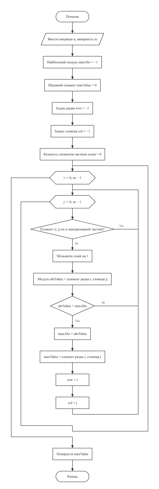
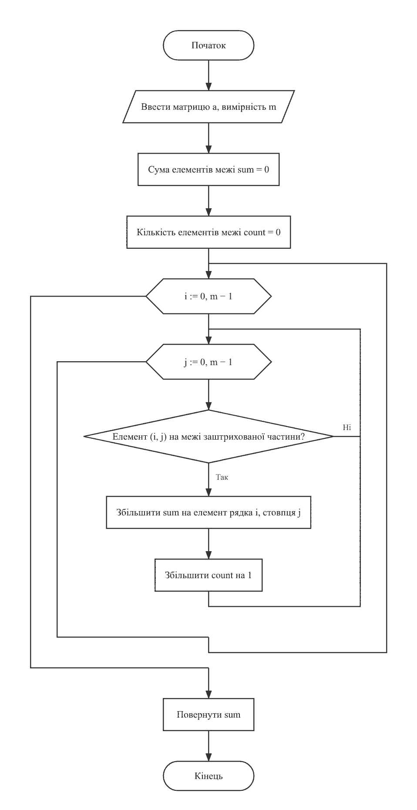
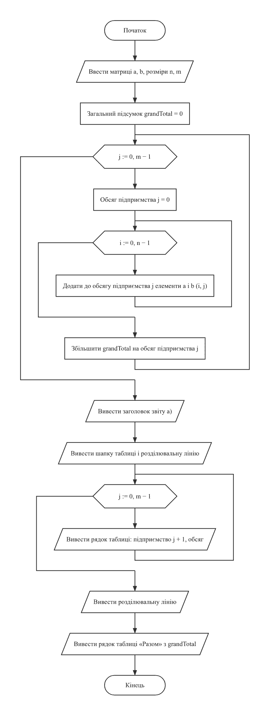
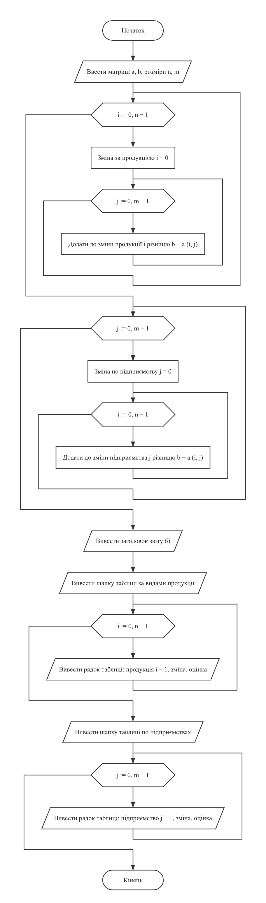
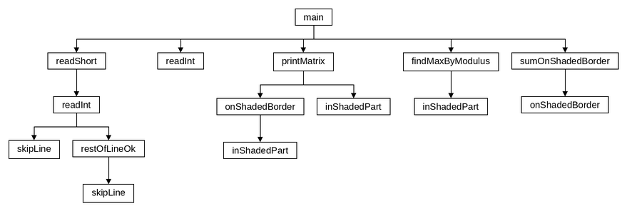
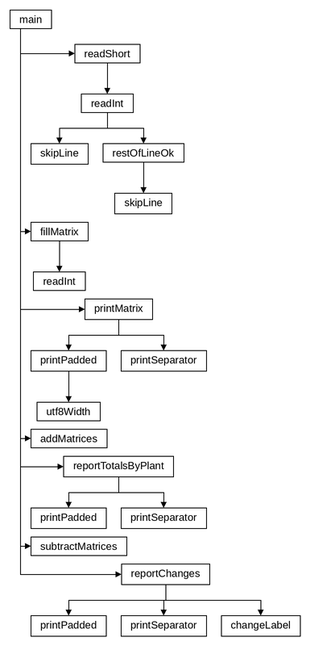

LAB7(19)Основи програмуванняLAB7(19)
Лабораторна робота №7
Багатовимірні масиви
Варіант 19. Виконав: Одарчук Олексій, КНУ імені Тараса Шевченка, Факультет інформаційних технологій, Кафедра програмних систем і технологій, група ІПЗ-11. C17, gcc
- 2 завдання
- C
- 8 розділів
01Мета роботи#
- Ознайомитися з особливостями багатовимірних масивів та їх подання в оперативній пам'яті.
- Опанувати технологію доступу до елементів матриці за двома індексами.
- Навчитися розробляти алгоритми та програми із застосуванням типових операцій і матричної алгебри.
02Умова задачі#
Завдання 1 (19.1) - базові операції обробки матриць#
Створити матрицю, вимірність m > 3 якої ввести з клавіатури. Передбачити меню вибору способу створення матриці: введення з клавіатури або генерація псевдовипадкових додатних та від'ємних чисел. Визначити найбільший за модулем елемент та його індекси серед елементів, що розташовані в заштрихованій частині малюнку. Підрахувати суму елементів по межі заштрихованої частини матриці. Вивести на екран вхідну матрицю, значення шуканого елемента та його індекси, шукану суму елементів. Матриці виводити у табличному вигляді.

Завдання 2 (19.2) - алгоритми матричної алгебри#
Нехай n підприємств випускають m видів продукції. Матриця A = (aij), i = 1..n, j = 1..m, задає обсяги i-ої продукції на j-му підприємстві в першому кварталі, а матриця B = (bij), i = 1..n, j = 1..m, - у другому кварталі. Знайти: а) сумарний обсяг продукції за два квартали по двох підприємствах; б) приріст або зменшення обсягів продукції за другий квартал порівняно з першим за видами продукції та по підприємствах. Вимірності матриць ввести з клавіатури, значення елементів матриць генерувати або вводити з клавіатури на вимогу користувача. Вивести результати за пунктами а) та б) з відповідними повідомленнями.
Вимоги до обох завдань: передбачити вибір способу створення матриць - введення з клавіатури або заповнення псевдовипадковими числами; для завдання 2 також передбачити вибір режиму виведення результатів: або тільки кінцевий результат, або з проміжними ітераціями.
Обмеження умови: забороняється використовувати STL, шаблон
std::vector, ітератори, контейнери, бібліотеки для роботи з матрицями. Крім
того, методичні вказівки зазначають: "Застосування покажчиків, динамічних масивів,
операторів new, delete в лабораторній роботі №7 НЕДОЦІЛЬНО і
НЕ СХВАЛЮЄТЬСЯ".
03Аналіз задачі та теоретичне обґрунтування#
Завдання 1. Опис заштрихованої частини в термінах індексів#
На рисунку заштриховано трикутник з вершиною в центрі квадрата й основою на правій стороні; його сторони - відрізки обох діагоналей.
Головна діагональ задається рівнянням i = j, побічна -
i + j = m - 1. Праворуч від них лежать елементи з j > i та
j > m - 1 - i, тому сектор описується системою:
j ≥ i (на головній діагоналі або праворуч від неї) j ≥ m - 1 - i (на побічній діагоналі або праворуч від неї)
Нерівності нестрогі, бо сторони трикутника на рисунку суцільні. Для m = 5 сектор має вигляд:
. . . . * . . . * * . . * * * . . . * * . . . . *
Межа заштрихованої частини - її контур: відрізки діагоналей (i = j,
i + j = m - 1) і права сторона (j = m - 1) в межах сектора.
При m = 4 усі шість елементів сектора лежать на межі; при m = 5 всередині сектора є один
елемент, що до межі не входить, при m = 6 - два.
Програма виводить розмітку матриці: елементи сектора позначено *, елементи
межі - #, тож її можна звірити з рисунком.
Найбільший за модулем елемент шукається строгою нерівністю, тому з кількох елементів з однаковим модулем береться перший при обході рядками.
Завдання 2. Позначення#
aij - обсяг i-ї продукції на j-му підприємстві, тож рядок матриці відповідає виду продукції, стовпець - підприємству; n - кількість видів продукції, m - кількість підприємств. Перше речення умови позначає n підприємств і m видів продукції, проте наступне речення задає aij як обсяг i-ї продукції на j-му підприємстві: за такої індексації рядком матриці є вид продукції. У програмі взято позначення, узгоджене з індексацією матриці.
Заголовки таблиць підписано словами ("Продукція 1", "Підприємство 2").
Пункт а) сформульовано для двох підприємств, тоді як кількість підприємств m вводиться з клавіатури. Програма трактує пункт узагальнено: сумарний обсяг за два квартали виводиться для кожного з m підприємств окремим рядком таблиці, а останній рядок дає підсумок по всіх підприємствах. Контрольний приклад з m = 2 відтворює умову буквально: таблиця містить рівно два підприємства і їх спільний підсумок. За такого підходу відповідь для двох підприємств є окремим випадком загальної таблиці, і жодного додаткового введення номерів підприємств не потрібно.
Завдання 2. Розрахункові формули#
а) Сумарний обсяг за два квартали по кожному підприємству - сума по стовпцю обох матриць:
n-1
S(j) = Σ ( a[i][j] + b[i][j] ), j = 0 ... m-1
i=0
б) Приріст (зменшення) за другий квартал - сума різниць. За видами продукції це сума по рядку, по підприємствах - сума по стовпцю:
m-1 n-1
Δпродукція(i) = Σ ( b[i][j] - a[i][j] ) Δп-во(j) = Σ ( b[i][j] - a[i][j] )
j=0 i=0
Знак результату визначає характер зміни: додатне значення - приріст, від'ємне - зменшення, нуль - без змін; програма виводить і число, і словесну оцінку.
Обсяг продукції одного виду на одному підприємстві обмежено 1 000 000
(MAX_VOLUME). Найбільший підсумок - загальний обсяг за два квартали: 2 · 20
· 20 · 1 000 000 = 8 · 10⁸, що менше за межу int 2 147 483 647. Тому
матриці, їх сума, різниця й усі підсумки зберігаються в типі int, а ширший
тип не потрібен. Ширина стовпців таблиці підбирається за найдовшим числом, тож великі
значення не зливаються.
Завдання 2. Режим виведення результатів#
У режимі з проміжними обчисленнями програма додатково виводить матриці A + B і B - A
(функції addMatrices() і subtractMatrices()): підсумки
стовпців A + B дають відповідь на пункт а), підсумки рядків і стовпців B - A - на пункт
б).
Розміщення матриць у пам'яті#
Динамічна пам'ять, як вимагають методичні вказівки, не застосовується: матриці оголошено
масивами сталого розміру (int a[MAX_SIZE][MAX_SIZE] у завданні 1,
int a[MAX_ROWS][MAX_COLS] у завданні 2), а фактична вимірність вводиться з
клавіатури.
Вибір типів даних#
| Змінні | Тип | Чому |
|---|---|---|
Завдання 1: вимірність m, індекси i, j,
maxRow, maxCol, кількості елементів сектора й межі,
ширина стовпця
|
short |
Вимірність - до 20, елементів у секторі - не більше 110, на межі - не більше 38. |
Завдання 1: пункт меню, межі генерації low, high
|
short |
Пункт меню 1..2, межі - від -10000 до 10000. |
Завдання 1: матриця a, найбільший за модулем елемент і його модуль,
сума по межі
|
int |
Елементи - до 1 000 000 за модулем, сума по межі - до 8 · 10⁷;
short (до 32 767) замалий.
|
Завдання 2: вимірності n, m, індекси, пункти меню,
межі генерації, ширини стовпців таблиць
|
short |
Вимірності - до 20, межі - від 0 до 10000, ширина таблиці - не більше 268 символів. |
Завдання 2: матриці a, b, sum,
diff, підсумки рядків і стовпців, totalByPlant,
deltaByProduct, deltaByPlant, grandTotal
|
int |
Обсяг - до 1 000 000, загальний підсумок - до 8 · 10⁸. Навіть при обсягах до
1000 він сягав би 800 000, тому short не підходить.
|
Дійсних чисел програми не використовують. Функція readShort() читає число в
int і записує його в short лише після перевірки діапазону:
формат %hd зберіг би обрізане значення (65540 як 4), і хибне введення
пройшло б перевірку.
Контроль введення#
Елементи матриць читаються функцією readInt(), а вимірності, пункти меню й
межі генерації - функцією readShort(); обидві перевіряють діапазон. Після
успішно прочитаного числа функція restOfLineOk() перевіряє залишок рядка:
пропуски до кінця рядка або до наступного числа припустимі, тому рядок матриці можна
вводити цілком ("1 2 3 4"), а будь-який інший символ після числа ("4x", "1.5")
вважається помилкою з повторним запитом. Нижня межа діапазону генерації має бути
від'ємною, а верхня - додатною, щоб діапазон охоплював і додатні, і від'ємні числа, як
вимагає умова. Елементи матриці завдання 1 обмежено 1 000 000 за модулем
(MAX_ABS_VALUE): межа сектора матриці 20 × 20 містить менше 80 елементів,
тож сума по межі за модулем не перевищує 8 · 10⁷ і вміщується в int, а
модуль будь-якого елемента обчислюється функцією abs() без переповнення.
Вирівнювання таблиць#
Специфікатор %-16s рахує байти, а кирилична літера в UTF-8 займає два
байти, тому для вирівнювання таблиць написано функцію printPadded(), що
рахує ширину в символах.
Література: Ковалюк Т.В. Алгоритмізація та програмування. - Львів.: "Магнолія 2006", 2024. - 400 с.; Deitel P., Deitel H. C++ How to Program. Pearson Education, Inc. Hoboken, New Jersey. 2017. - 3015 p.
04Блок-схема алгоритму#






HIPO-діаграма показує ієрархію викликів функцій так само, як у лекції 5: зверху головна функція main, від неї стрілки ведуть до функцій, які вона викликає, нижче - функції, що викликаються з них; петля біля блока означає рекурсивний виклик. Функцію, яку викликають з кількох місць, розгорнуто лише там, де вона трапляється вперше, а довгі переліки викликів подано стовпчиком, щоб схема вміщувалася на сторінку. Діаграму побудовано за текстом програми.


Схеми побудовано за текстами програм у rombik (rombik.app) відповідно до ДСТУ 19.701-90 (ISO 5807). Структура кожної схеми точно відповідає коду функції, а блоки описують дії словами, як у методичних вказівках, без фрагментів коду.
05Текст програми#
Завдання 1 - task1.c
/*==============================================================================
task1.c. Лабораторна робота №7. Завдання 1. Варіант 19.
Тема: багатовимірні масиви, базові операції обробки матриць.
Умова (таблиця 7.1, завдання 19.1): створити матрицю, вимірність m > 3 якої
ввести з клавіатури. Передбачити меню вибору способу створення матриці:
введення з клавіатури або генерація псевдовипадкових додатних та від'ємних
чисел. Визначити найбільший за модулем елемент та його індекси серед
елементів, що розташовані в заштрихованій частині малюнку. Підрахувати суму
елементів по межі заштрихованої частини матриці. Вивести на екран вхідну
матрицю, значення шуканого елемента та його індекси, шукану суму елементів.
Матриці виводити у табличному вигляді.
ОПИС ЗАШТРИХОВАНОЇ ЧАСТИНИ (рисунок до варіанта 19).
На рисунку заштриховано трикутник, вершина якого збігається з центром
квадрата, а основою є права сторона. Сторонами трикутника є відрізки
обох діагоналей квадрата. У термінах індексів квадратної матриці m x m
це "східний" сектор, утворений двома діагоналями:
j >= i (на головній діагоналі або праворуч від неї)
j >= m-1-i (на побічній діагоналі або праворуч від неї)
Приклад для m = 5 (позначено * - елементи заштрихованої частини):
. . . . *
. . . * *
. . * * *
. . . * *
. . . . *
МЕЖА ЗАШТРИХОВАНОЇ ЧАСТИНИ - це її контур: відрізки обох діагоналей
(i == j та i + j == m-1) і права сторона квадрата (j == m-1).
ОБМЕЖЕННЯ УМОВИ: забороняється використовувати STL, std::vector, ітератори,
контейнери, бібліотеки для роботи з матрицями.
Виконав: Одарчук Олексій, КНУ імені Тараса Шевченка, ФІТ, група ІПЗ-11.
Компілятор: gcc -std=c17
==============================================================================*/
#include <stdio.h>
#include <limits.h>
#include <stdbool.h>
#include <ctype.h>
#include <stdlib.h>
#include <time.h>
/* Найбільша припустима вимірність матриці. Межа масиву в мові C має бути сталим
виразом часу компіляції, а змінна з модифікатором const ним не є, тому розмір
задано директивою препроцесора. */
#define MAX_SIZE 20
/* Найбільше за модулем значення елемента. Межа заштрихованої частини матриці
20x20 містить менше 80 елементів, тож сума по межі за модулем не перевищує
80 * 1 000 000 = 8 * 10^7 і вміщується в int разом із модулем будь-якого
елемента. Без такої межі для суми знадобився б ширший тип. Тип short (до
32767) для елементів і суми замалий, тож вони лишаються int; вимірність,
індекси, лічильники та межі генерації не перевищують 10000 і мають тип
short. */
#define MAX_ABS_VALUE 1000000
/* Межі генерації псевдовипадкових чисел. Функція rand() гарантовано повертає
числа лише від 0 до 32767 (RAND_MAX у Visual Studio), тому ширина діапазону
high - low + 1 не повинна перевищувати 32768: інакше вираз
low + rand() % (high - low + 1) охопив би не всі значення діапазону.
Межі генерації вміщуються в short. */
#define MAX_RANDOM 10000
//========= skipLine: відкинути залишок рядка введення разом із символом '\n' ==========
/*
skipLine - відкинути залишок рядка введення разом із символом '\n'.
*/
void skipLine(void)
{
int c = getchar(); //прочитати перший символ залишку
while (c != '\n' && c != EOF) //повторювати до кінця рядка
{
c = getchar(); //прочитати наступний символ
}
}
//======= restOfLineOk: перевірити залишок рядка після успішно прочитаного числа =======
/*
restOfLineOk - перевірити залишок рядка після успішно прочитаного числа.
Припустимі лише пропуски до кінця рядка або до наступного числа (так
рядок матриці "1 2 3 4" читається як чотири елементи чотирма викликами
readInt); будь-який інший символ - помилка, і решта рядка відкидається.
Повертає : true - залишок рядка коректний; false - у рядку зайві символи.
*/
bool restOfLineOk(void)
{
int c = getchar(); //прочитати символ після числа
while (c == ' ' || c == '\t' || c == '\r') //пропустити пробіли й табуляції
{
c = getchar(); //прочитати наступний символ
}
if (c == '\n' || c == EOF) //якщо рядок закінчився
{
return true; //повернути ознаку коректного рядка
}
if (isdigit(c) || c == '-' || c == '+') //якщо далі починається число
{
ungetc(c, stdin); //повернути символ у потік
return true; //повернути ознаку коректного рядка
}
skipLine(); //відкинути решту рядка
return false; //повернути ознаку зайвих символів
}
//====== readInt: прочитати ціле число із заданого діапазону з контролем введення ======
/*
readInt - прочитати ціле число із заданого діапазону з контролем введення.
Параметри: prompt [вхідний], value [вихідний], low, high [вхідні].
Повертає : true - число прочитано; false - вхідні дані вичерпано.
Число поза діапазоном, не число або зайві символи після числа в тому
самому рядку - помилка з повторним запитом; кілька чисел в одному рядку
через пропуск приймаються по одному за кожен виклик.
*/
bool readInt(const char *prompt, int *value, int low, int high)
{
for (;;) //повторювати до коректного введення
{
printf("%s", prompt); //вивести запрошення
const int scanned = scanf("%d", value); //увести число
if (scanned == EOF) //якщо вхідні дані вичерпано
{
return false; //повернути ознаку невдачі
}
if (scanned == 0) //якщо введено не число
{
skipLine(); //відкинути хибний рядок
}
//якщо число коректне
else if (restOfLineOk() && *value >= low && *value <= high)
{
return true; //повернути ознаку успіху
}
//вивести повідомлення про помилку
printf("Помилка: потрібне ціле число від %d до %d.\n", low, high);
}
}
//==== readShort: прочитати ціле число з діапазону типу short з контролем введення =====
/*
readShort - прочитати ціле число з діапазону типу short з контролем введення.
Параметри: prompt [вхідний], value [вихідний], low, high [вхідні].
Повертає : true - число прочитано; false - вхідні дані вичерпано.
Число читається функцією readInt у змінну типу int і записується в short
лише після перевірки діапазону: формат %hd зберіг би обрізане при
переповненні значення (65540 як 4), і хибне введення пройшло б перевірку.
Локальні змінні: number - прочитане число.
*/
bool readShort(const char *prompt, short *value, short low, short high)
{
int number = 0; //прочитане число
if (!readInt(prompt, &number, low, high)) //якщо число не прочитано
{
return false; //повернути ознаку невдачі
}
*value = (short)number; //записати перевірене число
return true; //повернути ознаку успіху
}
//========== inShadedPart: чи належить елемент заштрихованій частині матриці ===========
/*
inShadedPart - чи належить елемент заштрихованій частині матриці.
Параметри:
i, j [вхідні] - індекси рядка та стовпця елемента;
m [вхідний] - вимірність квадратної матриці.
Повертає : true - елемент належить "східному" сектору між діагоналями.
*/
bool inShadedPart(short i, short j, short m)
{
return j >= i && j >= m - 1 - i; //перевірити належність сектору
}
//========== onShadedBorder: чи лежить елемент на межі заштрихованої частини ===========
/*
onShadedBorder - чи лежить елемент на межі заштрихованої частини.
Межу утворюють відрізки головної діагоналі (i == j), побічної діагоналі
(i + j == m-1) та права сторона матриці (j == m-1) - але лише ті їх точки,
що належать самому сектору.
Параметри:
i, j [вхідні] - індекси елемента;
m [вхідний] - вимірність матриці.
Повертає : true - елемент лежить на межі заштрихованої частини.
*/
bool onShadedBorder(short i, short j, short m)
{
if (!inShadedPart(i, j, m)) //якщо елемент поза сектором
{
return false; //повернути ознаку поза межею
}
return i == j || i + j == m - 1 || j == m - 1; //перевірити належність до межі
}
//=========== printMatrix: вивести матрицю у табличному вигляді з нумерацією ===========
/*
printMatrix - вивести матрицю у табличному вигляді з нумерацією
рядків і стовпців.
Параметри:
title [вхідний] - заголовок таблиці;
a [вхідний] - матриця;
m [вхідний] - вимірність матриці;
mark [вхідний] - якщо true, елементи заштрихованої частини позначаються
символом '*', а елементи її межі - символом '#'.
Локальні змінні:
width - ширина стовпця таблиці (не більше 13 символів);
length - довжина запису елемента з відступом.
Параметр-матрицю оголошено без const: у C до редакції C23 масив
int a[N][M] неявно не перетворюється на const int (*)[M].
*/
void printMatrix(const char *title, int a[][MAX_SIZE], short m, bool mark)
{
/* Ширина стовпця - за найдовшим записом числа, але не менше 8 символів,
щоб сусідні числа не зливалися навіть для меж типу int. */
short width = 8; //ширина стовпця таблиці
for (short i = 0; i < m; ++i) //перебрати рядки матриці
{
for (short j = 0; j < m; ++j) //перебрати стовпці матриці
{
//обчислити довжину запису числа
const short length = (short)(snprintf(NULL, 0, "%d", a[i][j]) + 2);
if (length > width) //якщо запис ширший за стовпець
{
width = length; //розширити стовпець
}
}
}
printf("\n%s (%hd x %hd):\n", title, m, m); //вивести заголовок таблиці
printf(" "); //вивести відступ рядка номерів
for (short j = 0; j < m; ++j) //перебрати номери стовпців
{
printf("%*hd", width, j); //вивести номер стовпця
}
printf("\n"); //перейти на новий рядок
printf(" "); //вивести відступ лінії
for (short j = 0; j < m * width; ++j) //побудувати розділювальну лінію
{
putchar('-'); //вивести символ лінії
}
printf("\n"); //перейти на новий рядок
for (short i = 0; i < m; ++i) //перебрати рядки матриці
{
printf("%4hd |", i); //вивести номер рядка
for (short j = 0; j < m; ++j) //перебрати елементи рядка
{
if (mark) //якщо потрібна розмітка
{
char flag = ' '; //позначка елемента
if (onShadedBorder(i, j, m)) //якщо елемент на межі
{
flag = '#'; //позначити елемент межі
}
else if (inShadedPart(i, j, m)) //якщо елемент усередині сектора
{
flag = '*'; //позначити елемент сектора
}
//вивести елемент з позначкою
printf("%*d%c", width - 1, a[i][j], flag);
}
else //інакше вивести без розмітки
{
printf("%*d", width, a[i][j]); //вивести елемент
}
}
printf("\n"); //завершити рядок таблиці
}
if (mark) //якщо була розмітка
{
//вивести пояснення позначок
printf(" * - заштрихована частина, # - її межа\n");
}
}
//==== findMaxByModulus: знайти найбільший за модулем елемент заштрихованої частини ====
/*
findMaxByModulus - знайти найбільший за модулем елемент заштрихованої частини.
Параметри:
a [вхідний] - матриця;
m [вхідний] - вимірність матриці;
row [вихідний] - адреса змінної для індексу рядка знайденого елемента;
col [вихідний] - адреса змінної для індексу стовпця;
count [вихідний] - адреса лічильника елементів сектора (не більше 110).
Повертає : значення елемента з найбільшим модулем.
За наявності кількох елементів з однаковим модулем запам'ятовується перший
знайдений при обході рядками: порівняння виконується строгою нерівністю.
Локальні змінні:
maxAbs - найбільше знайдене абсолютне значення;
maxValue - сам елемент з найбільшим модулем;
absValue - модуль поточного елемента.
Значення елементів і їх модулі сягають MAX_ABS_VALUE, тому мають тип int.
*/
int findMaxByModulus(int a[][MAX_SIZE], short m, short *row, short *col, short *count)
{
int maxAbs = -1; //найбільший знайдений модуль
int maxValue = 0; //елемент з найбільшим модулем
*row = -1; //скинути індекс рядка
*col = -1; //скинути індекс стовпця
*count = 0; //обнулити лічильник елементів
for (short i = 0; i < m; ++i) //перебрати рядки матриці
{
for (short j = 0; j < m; ++j) //перебрати стовпці матриці
{
if (!inShadedPart(i, j, m)) //якщо елемент поза сектором
{
continue; //перейти до наступного елемента
}
++(*count); //порахувати елемент сектора
const int absValue = abs(a[i][j]); //обчислити модуль елемента
if (absValue > maxAbs) //якщо знайдено більший модуль
{
maxAbs = absValue; //запам'ятати новий модуль
maxValue = a[i][j]; //запам'ятати сам елемент
*row = i; //запам'ятати індекс рядка
*col = j; //запам'ятати індекс стовпця
}
}
}
return maxValue; //повернути знайдений елемент
}
//====== sumOnShadedBorder: сума елементів по межі заштрихованої частини матриці =======
/*
sumOnShadedBorder - сума елементів по межі заштрихованої частини матриці.
Параметри:
a [вхідний] - матриця;
m [вхідний] - вимірність матриці;
count [вихідний] - адреса лічильника елементів межі (не більше 38).
Повертає : суму елементів межі (тип int: до 8 * 10^7 за модулем).
*/
int sumOnShadedBorder(int a[][MAX_SIZE], short m, short *count)
{
int sum = 0; //сума елементів межі
*count = 0; //обнулити лічильник елементів межі
for (short i = 0; i < m; ++i) //перебрати рядки матриці
{
for (short j = 0; j < m; ++j) //перебрати стовпці матриці
{
if (onShadedBorder(i, j, m)) //якщо елемент лежить на межі
{
sum += a[i][j]; //накопичити суму межі
++(*count); //порахувати елемент межі
}
}
}
return sum; //повернути суму
}
//================================ головна функція main ================================
/*
Головна функція. Створює матрицю, знаходить найбільший за модулем елемент
заштрихованої частини та суму елементів по її межі.
Локальні змінні:
a - оброблювана матриця (int: елементи до MAX_ABS_VALUE);
m - вимірність матриці (short);
choice - спосіб створення матриці (short);
prompt - запрошення до введення елемента;
low, high - межі діапазону для генерації (short);
maxValue - елемент з найбільшим модулем (int);
maxRow, maxCol - індекси знайденого елемента (short);
borderSum - сума елементів по межі заштрихованої частини (int);
shadedCount, borderCount - кількості елементів сектора та його межі (short).
*/
int main(void)
{
printf("Лабораторна робота №7, завдання 1 (варіант 19)\n"); //вивести назву роботи
//вивести відомості про виконавця
printf("Виконав: студент групи ІПЗ-11 Одарчук Олексій\n");
//вивести тему завдання
printf("Пошук найбільшого за модулем елемента в заштрихованій частині\n");
printf("матриці та суми елементів по її межі\n\n"); //вивести продовження теми
short m = 0; //вимірність матриці
//якщо вимірність не введено
if (!readShort("Уведіть вимірність квадратної матриці m (4..20): ", &m, 4,
MAX_SIZE))
{
return 1; //завершити через кінець введення
}
int a[MAX_SIZE][MAX_SIZE]; //оброблювана матриця
//вивести меню способу створення
printf("\nСпосіб створення матриці:\n"
" 1 - введення з клавіатури\n"
" 2 - генерація псевдовипадкових додатних та від'ємних чисел\n");
short choice = 0; //обраний спосіб створення
if (!readShort("Оберіть спосіб (1..2): ", &choice, 1, 2)) //якщо спосіб не введено
{
return 1; //завершити через кінець введення
}
if (choice == 1) //якщо обрано введення з клавіатури
{
//вивести запрошення до введення
printf("Уведіть елементи матриці по рядках (усього %d):\n", m * m);
for (short i = 0; i < m; ++i) //перебрати рядки матриці
{
for (short j = 0; j < m; ++j) //перебрати стовпці матриці
{
char prompt[40]; //запрошення для елемента
//сформувати запрошення
snprintf(prompt, sizeof prompt, " a[%hd][%hd] = ", i, j);
//якщо елемент не введено
if (!readInt(prompt, &a[i][j], -MAX_ABS_VALUE, MAX_ABS_VALUE))
{
return 1; //завершити через кінець введення
}
}
}
}
else //інакше згенерувати матрицю
{
short low = 0; //нижня межа генерації
short high = 0; //верхня межа генерації
//якщо межі діапазону не введено
if (!readShort("Уведіть нижню межу діапазону (від -10000 до -1): ", &low,
-MAX_RANDOM, -1) ||
!readShort("Уведіть верхню межу діапазону (від 1 до 10000): ", &high, 1,
MAX_RANDOM))
{
return 1; //завершити через кінець введення
}
srand((unsigned)time(NULL)); //ініціалізувати генератор випадкових чисел
for (short i = 0; i < m; ++i) //перебрати рядки матриці
{
for (short j = 0; j < m; ++j) //перебрати стовпці матриці
{
a[i][j] = low + rand() % (high - low + 1); //число від low до high
}
}
}
printMatrix("Вхідна матриця", a, m, false); //вивести вхідну матрицю
//вивести розмітку сектора та межі
printMatrix("Розмітка заштрихованої частини", a, m, true);
short maxRow = -1; //рядок найбільшого за модулем
short maxCol = -1; //стовпець найбільшого за модулем
short shadedCount = 0; //кількість елементів сектора
short borderCount = 0; //кількість елементів межі
//знайти найбільший за модулем елемент
const int maxValue = findMaxByModulus(a, m, &maxRow, &maxCol, &shadedCount);
//обчислити суму по межі
const int borderSum = sumOnShadedBorder(a, m, &borderCount);
printf("\nРезультати\n"); //вивести заголовок результатів
//вивести кількість елементів сектора
printf(" Елементів у заштрихованій частині: %hd\n", shadedCount);
printf(" Найбільший за модулем елемент: %d (модуль %d)\n", maxValue,
abs(maxValue)); //вивести найбільший за модулем елемент
printf(" Його індекси: рядок %hd, стовпець %hd\n", maxRow,
maxCol); //вивести індекси елемента
//вивести кількість елементів межі
printf(" Елементів на межі: %hd\n", borderCount);
//вивести суму по межі
printf(" Сума елементів по межі: %d\n", borderSum);
return 0; //завершити програму успішно
}
Завдання 2 - task2.c
/*==============================================================================
task2.c. Лабораторна робота №7. Завдання 2. Варіант 19.
Тема: алгоритми матричної алгебри.
Умова (таблиця 7.1, завдання 19.2): нехай n підприємств випускають m видів
продукції. Матриця A = (a[i][j]), i = 1..n, j = 1..m задає обсяги i-ої
продукції на j-му підприємстві в першому кварталі, а матриця
B = (b[i][j]) - у другому кварталі. Знайти:
а) сумарний обсяг продукції за два квартали по двох підприємствах;
б) приріст або зменшення обсягів продукції за другий квартал порівняно
з першим за видами продукції та по підприємствах.
Вимірності матриць увести з клавіатури, значення елементів матриць
генерувати або вводити з клавіатури на вимогу користувача. Вивести
результати за пунктами а) та б) з відповідними повідомленнями.
Вимога до завдання 2: передбачити вибір режиму виведення результатів -
або тільки кінцевий результат, або з проміжними обчисленнями. Проміжними
результатами є матриця сумарних обсягів A + B і матриця змін B - A:
підсумки їх стовпців і рядків дають відповіді на пункти а) та б).
Позначення: a[i][j] - обсяг i-ї продукції на j-му підприємстві, тож рядок
матриці відповідає виду продукції, стовпець - підприємству; n - кількість
видів продукції, m - кількість підприємств.
ОБМЕЖЕННЯ УМОВИ: забороняється використовувати STL, std::vector, ітератори,
контейнери, бібліотеки для роботи з матрицями.
Виконав: Одарчук Олексій, КНУ імені Тараса Шевченка, ФІТ, група ІПЗ-11.
Компілятор: gcc -std=c17
==============================================================================*/
#include <stdio.h>
#include <limits.h>
#include <stdbool.h>
#include <ctype.h>
#include <stdlib.h>
#include <time.h>
/* Найбільші припустимі вимірності матриць. Межа масиву в мові C має бути сталим
виразом часу компіляції, а змінна з модифікатором const ним не є, тому розмір
задано директивою препроцесора. */
#define MAX_ROWS 20 //видів продукції
#define MAX_COLS 20 //підприємств
/* Найбільший обсяг продукції одного виду на одному підприємстві за квартал.
Найбільший можливий підсумок - загальний обсяг за два квартали:
2 * MAX_ROWS * MAX_COLS * MAX_VOLUME = 2 * 20 * 20 * 1 000 000 = 8 * 10^8,
що менше за INT_MAX, тож усі матриці й підсумки зберігаються в int. Тип
short (до 32767) для них замалий навіть при обсягах до 1000: загальний
підсумок сягав би 2 * 20 * 20 * 1000 = 800 000. Вимірності, індекси, пункти
меню, межі генерації та ширини стовпців не перевищують 10000 і мають тип
short. */
#define MAX_VOLUME 1000000
/* Межі генерації псевдовипадкових чисел. Функція rand() гарантовано повертає
числа лише від 0 до 32767 (RAND_MAX у Visual Studio), тому ширина діапазону
high - low + 1 не повинна перевищувати 32768: інакше вираз
low + rand() % (high - low + 1) охопив би не всі значення діапазону.
Межі генерації вміщуються в short. */
#define MAX_RANDOM 10000
/* Ширини колонок таблиць у символах. */
enum
{
LABEL_WIDTH = 16, //"Продукція N" у таблиці обсягів
COLUMN_WIDTH = 10, //стовпець підприємства в таблиці обсягів
TOTAL_WIDTH = 12, //колонка "Разом" у таблиці обсягів
NAME_WIDTH = 18, //"Підприємство N" / "Продукція N" у звітах
VALUE_WIDTH = 18, //сумарний обсяг у звіті а)
DELTA_WIDTH = 14, //зміна обсягу у звіті б)
CHANGES_WIDTH = 50 //ширина таблиць звіту б) разом з оцінкою
};
//================= utf8Width: ширина рядка в символах, а не в байтах ==================
/*
utf8Width - ширина рядка в символах, а не в байтах.
У кодуванні UTF-8 кирилична літера займає два байти, тому специфікатор
формату виду %-16s, який рахує байти, вирівнює заголовки таблиць
неправильно. Функція рахує лише початкові байти символів: у продовжувальних
байтах старші біти дорівнюють 10 у двійковій системі.
Параметри: s [вхідний] - рядок у кодуванні UTF-8.
Повертає : кількість символів рядка.
*/
short utf8Width(const char *s)
{
short width = 0; //кількість символів рядка
//перебрати байти рядка
for (const unsigned char *p = (const unsigned char *)s; *p != '\0'; ++p)
{
/* Продовжувальний байт UTF-8 має вигляд 10xxxxxx: маска 0xC0 лишає
два старші біти, і якщо вони не дорівнюють 10, це початок символу. */
if ((*p & 0xC0) != 0x80) //якщо байт починає символ
{
++width; //порахувати символ
}
}
return width; //повернути ширину рядка
}
//====== printPadded: вивести рядок, доповнивши його пропусками до заданої ширини ======
/*
printPadded - вивести рядок, доповнивши його пропусками до заданої ширини.
Параметри:
s [вхідний] - рядок, що виводиться;
width [вхідний] - потрібна ширина поля в символах;
left [вхідний] - true: вирівнювання ліворуч; false: праворуч.
Локальні змінні:
pad - кількість пропусків, які треба додати.
*/
void printPadded(const char *s, short width, bool left)
{
const short pad = width - utf8Width(s); //обчислити кількість пропусків
if (!left) //якщо вирівнювання праворуч
{
for (short i = 0; i < pad; ++i) //повторити pad разів
{
putchar(' '); //вивести пропуск
}
}
printf("%s", s); //вивести сам рядок
if (left) //якщо вирівнювання ліворуч
{
for (short i = 0; i < pad; ++i) //повторити pad разів
{
putchar(' '); //вивести пропуск
}
}
}
//========= skipLine: відкинути залишок рядка введення разом із символом '\n' ==========
/*
skipLine - відкинути залишок рядка введення разом із символом '\n'.
*/
void skipLine(void)
{
int c = getchar(); //прочитати перший символ залишку
while (c != '\n' && c != EOF) //повторювати до кінця рядка
{
c = getchar(); //прочитати наступний символ
}
}
//======= restOfLineOk: перевірити залишок рядка після успішно прочитаного числа =======
/*
restOfLineOk - перевірити залишок рядка після успішно прочитаного числа.
Припустимі лише пропуски до кінця рядка або до наступного числа (так
рядок матриці "1 2 3 4" читається як чотири елементи чотирма викликами
readInt); будь-який інший символ - помилка, і решта рядка відкидається.
Повертає : true - залишок рядка коректний; false - у рядку зайві символи.
*/
bool restOfLineOk(void)
{
int c = getchar(); //прочитати символ після числа
while (c == ' ' || c == '\t' || c == '\r') //пропустити пробіли й табуляції
{
c = getchar(); //прочитати наступний символ
}
if (c == '\n' || c == EOF) //якщо рядок закінчився
{
return true; //повернути ознаку коректного рядка
}
if (isdigit(c) || c == '-' || c == '+') //якщо далі починається число
{
ungetc(c, stdin); //повернути символ у потік
return true; //повернути ознаку коректного рядка
}
skipLine(); //відкинути решту рядка
return false; //повернути ознаку зайвих символів
}
//====== readInt: прочитати ціле число із заданого діапазону з контролем введення ======
/*
readInt - прочитати ціле число із заданого діапазону з контролем введення.
Параметри: prompt [вхідний], value [вихідний], low, high [вхідні].
Повертає : true - число прочитано; false - вхідні дані вичерпано.
Число поза діапазоном, не число або зайві символи після числа в тому
самому рядку - помилка з повторним запитом; кілька чисел в одному рядку
через пропуск приймаються по одному за кожен виклик.
*/
bool readInt(const char *prompt, int *value, int low, int high)
{
for (;;) //повторювати до коректного введення
{
printf("%s", prompt); //вивести запрошення
const int scanned = scanf("%d", value); //увести число
if (scanned == EOF) //якщо вхідні дані вичерпано
{
return false; //повернути ознаку невдачі
}
if (scanned == 0) //якщо введено не число
{
skipLine(); //відкинути хибний рядок
}
//якщо число коректне
else if (restOfLineOk() && *value >= low && *value <= high)
{
return true; //повернути ознаку успіху
}
//вивести повідомлення про помилку
printf("Помилка: потрібне ціле число від %d до %d.\n", low, high);
}
}
//==== readShort: прочитати ціле число з діапазону типу short з контролем введення =====
/*
readShort - прочитати ціле число з діапазону типу short з контролем введення.
Параметри: prompt [вхідний], value [вихідний], low, high [вхідні].
Повертає : true - число прочитано; false - вхідні дані вичерпано.
Число читається функцією readInt у змінну типу int і записується в short
лише після перевірки діапазону: формат %hd зберіг би обрізане при
переповненні значення (65540 як 4), і хибне введення пройшло б перевірку.
Локальні змінні: number - прочитане число.
*/
bool readShort(const char *prompt, short *value, short low, short high)
{
int number = 0; //прочитане число
if (!readInt(prompt, &number, low, high)) //якщо число не прочитано
{
return false; //повернути ознаку невдачі
}
*value = (short)number; //записати перевірене число
return true; //повернути ознаку успіху
}
//================== fillMatrix: заповнити матрицю обсягів продукції ===================
/*
fillMatrix - заповнити матрицю обсягів продукції.
Параметри:
a [вихідний] - матриця, що заповнюється;
n [вхідний] - кількість рядків (видів продукції);
m [вхідний] - кількість стовпців (підприємств);
name [вхідний] - назва матриці для запрошень;
byHand [вхідний] - true: введення з клавіатури; false: генерація;
low, high [вхідні] - межі діапазону для генерації.
Повертає : true - заповнено; false - вхідні дані вичерпано.
*/
bool fillMatrix(int a[][MAX_COLS], short n, short m, const char *name, bool byHand,
short low, short high)
{
if (byHand) //якщо введення з клавіатури
{
printf("Уведіть обсяги для матриці %s; рядок - вид продукції, "
"стовпець - підприємство:\n",
name); //вивести запрошення до введення
for (short i = 0; i < n; ++i) //перебрати рядки матриці
{
for (short j = 0; j < m; ++j) //перебрати стовпці матриці
{
char prompt[80]; //запрошення для елемента
//сформувати запрошення
snprintf(prompt, sizeof prompt,
" продукція %d, підприємство %d: ", i + 1, j + 1);
//якщо обсяг не введено
if (!readInt(prompt, &a[i][j], 0, MAX_VOLUME))
{
return false; //повернути ознаку невдачі
}
}
}
}
else //інакше згенерувати матрицю
{
for (short i = 0; i < n; ++i) //перебрати рядки матриці
{
for (short j = 0; j < m; ++j) //перебрати стовпці матриці
{
a[i][j] = low + rand() % (high - low + 1); //обсяг від low до high
}
}
}
return true; //повернути ознаку успіху
}
//================ printSeparator: вивести розділювальну лінію таблиці =================
/*
printSeparator - вивести розділювальну лінію таблиці.
Параметри: width [вхідний] - довжина лінії в символах.
*/
void printSeparator(short width)
{
printf(" "); //вивести відступ лінії
for (short i = 0; i < width; ++i) //повторити width разів
{
putchar('-'); //вивести символ лінії
}
printf("\n"); //завершити лінію
}
//====== printMatrix: вивести матрицю обсягів у табличному вигляді із заголовками ======
/*
printMatrix - вивести матрицю обсягів у табличному вигляді із заголовками
рядків (види продукції) та стовпців (підприємства).
Праворуч виводяться підсумки рядків, унизу - підсумки стовпців.
Параметри:
title [вхідний] - заголовок таблиці;
a [вхідний] - матриця;
n, m [вхідні] - кількість рядків і стовпців.
Локальні змінні:
bound - сума модулів елементів (int: до 8 * 10^8);
needed - ширина запису bound зі знаком і відступом;
columnWidth - ширина стовпця підприємства;
totalWidth - ширина колонки підсумків;
tableWidth - повна ширина таблиці для розділювальних ліній;
label - підпис рядка ("Продукція N");
rowTotal, columnTotal, grandTotal - підсумки рядка, стовпця й таблиці
(int: сягають 8 * 10^8).
Ширини вміщуються в short: не більше 16 + 20 * 12 + 12 = 268 символів.
Параметр-матрицю оголошено без const: у C до редакції C23 масив
int a[N][M] неявно не перетворюється на const int (*)[M].
*/
void printMatrix(const char *title, int a[][MAX_COLS], short n, short m)
{
printf("\n%s\n", title); //вивести заголовок таблиці
/* Сума модулів усіх елементів обмежує зверху будь-який підсумок таблиці,
тож за довжиною її запису зі знаком обирається ширина стовпців: для
звичайних обсягів лишаються стандартні ширини, для великих стовпці
розширюються, щоб числа не зливалися. */
int bound = 0; //сума модулів елементів
for (short i = 0; i < n; ++i) //перебрати рядки матриці
{
for (short j = 0; j < m; ++j) //перебрати стовпці матриці
{
bound += abs(a[i][j]); //накопичити суму модулів
}
}
//обчислити потрібну ширину стовпця
const short needed = (short)(snprintf(NULL, 0, "%d", -bound) + 2);
//вибрати ширину стовпця підприємства
const short columnWidth = needed > COLUMN_WIDTH ? needed : COLUMN_WIDTH;
//вибрати ширину колонки підсумків
const short totalWidth = needed > TOTAL_WIDTH ? needed : TOTAL_WIDTH;
//обчислити повну ширину таблиці
const short tableWidth = (short)(LABEL_WIDTH + columnWidth * m + totalWidth);
printf(" "); //вивести відступ заголовка
printPadded("Продукція \\ П-во", LABEL_WIDTH, true); //вивести підпис кута таблиці
for (short j = 0; j < m; ++j) //перебрати номери підприємств
{
printf("%*d", columnWidth, j + 1); //вивести номер підприємства
}
printPadded("Разом", totalWidth, false); //вивести заголовок підсумків
printf("\n"); //завершити рядок заголовка
printSeparator(tableWidth); //вивести розділювальну лінію
for (short i = 0; i < n; ++i) //перебрати види продукції
{
char label[LABEL_WIDTH * 2]; //підпис рядка таблиці
snprintf(label, sizeof label, "Продукція %d", i + 1); //сформувати підпис рядка
printf(" "); //вивести відступ рядка
printPadded(label, LABEL_WIDTH, true); //вивести підпис рядка
int rowTotal = 0; //підсумок рядка
for (short j = 0; j < m; ++j) //перебрати підприємства
{
printf("%*d", columnWidth, a[i][j]); //вивести обсяг
rowTotal += a[i][j]; //накопичити підсумок рядка
}
printf("%*d\n", totalWidth, rowTotal); //вивести підсумок рядка
}
printSeparator(tableWidth); //вивести розділювальну лінію
printf(" "); //вивести відступ рядка підсумків
printPadded("Разом", LABEL_WIDTH, true); //вивести підпис рядка підсумків
int grandTotal = 0; //загальний підсумок таблиці
for (short j = 0; j < m; ++j) //перебрати підприємства
{
int columnTotal = 0; //підсумок стовпця
for (short i = 0; i < n; ++i) //перебрати види продукції
{
columnTotal += a[i][j]; //накопичити підсумок стовпця
}
printf("%*d", columnWidth, columnTotal); //вивести підсумок стовпця
grandTotal += columnTotal; //накопичити загальний підсумок
}
printf("%*d\n", totalWidth, grandTotal); //вивести загальний підсумок
}
//===================== addMatrices: поелементна сума двох матриць =====================
/*
addMatrices - поелементна сума двох матриць: c[i][j] = a[i][j] + b[i][j].
Параметри:
a, b [вхідні] - доданки;
c [вихідний] - результат;
n, m [вхідні] - кількість рядків і стовпців.
*/
void addMatrices(int a[][MAX_COLS], int b[][MAX_COLS], int c[][MAX_COLS], short n,
short m)
{
for (short i = 0; i < n; ++i) //перебрати рядки матриці
{
for (short j = 0; j < m; ++j) //перебрати стовпці матриці
{
c[i][j] = a[i][j] + b[i][j]; //обчислити суму елементів
}
}
}
//================= subtractMatrices: поелементна різниця двох матриць =================
/*
subtractMatrices - поелементна різниця двох матриць: c[i][j] = a[i][j] - b[i][j].
Параметри:
a [вхідний] - зменшуване;
b [вхідний] - від'ємник;
c [вихідний] - результат;
n, m [вхідні] - кількість рядків і стовпців.
*/
void subtractMatrices(int a[][MAX_COLS], int b[][MAX_COLS], int c[][MAX_COLS], short n,
short m)
{
for (short i = 0; i < n; ++i) //перебрати рядки матриці
{
for (short j = 0; j < m; ++j) //перебрати стовпці матриці
{
c[i][j] = a[i][j] - b[i][j]; //обчислити різницю елементів
}
}
}
//======================== reportTotalsByPlant: пункт а) умови =========================
/*
reportTotalsByPlant - пункт а) умови: сумарний обсяг продукції за два квартали
по кожному підприємству.
Параметри:
a, b [вхідні] - обсяги випуску за I та II квартали;
n [вхідний] - кількість видів продукції (рядків);
m [вхідний] - кількість підприємств (стовпців).
Локальні змінні:
totalByPlant - сумарний обсяг по кожному підприємству (int: до 4 * 10^7);
grandTotal - підсумок по всіх підприємствах (int: до 8 * 10^8);
label - підпис рядка таблиці ("Підприємство N").
*/
void reportTotalsByPlant(int a[][MAX_COLS], int b[][MAX_COLS], short n, short m)
{
int totalByPlant[MAX_COLS]; //сумарні обсяги підприємств
int grandTotal = 0; //загальний обсяг
for (short j = 0; j < m; ++j) //перебрати підприємства
{
totalByPlant[j] = 0; //обнулити обсяг підприємства
for (short i = 0; i < n; ++i) //перебрати види продукції
{
totalByPlant[j] += a[i][j] + b[i][j]; //накопичити обсяг за два квартали
}
grandTotal += totalByPlant[j]; //накопичити загальний обсяг
}
//вивести роздільник звіту
printf("\n============================================================\n");
//вивести заголовок пункту а)
printf("а) Сумарний обсяг продукції за два квартали по підприємствах\n\n");
printf(" "); //вивести відступ заголовка
printPadded("Підприємство", NAME_WIDTH, true); //вивести заголовок стовпця назв
//вивести заголовок стовпця обсягів
printPadded("Обсяг за I+II кв.", VALUE_WIDTH, false);
printf("\n"); //завершити рядок заголовка
printSeparator(NAME_WIDTH + VALUE_WIDTH); //вивести розділювальну лінію
for (short j = 0; j < m; ++j) //перебрати підприємства
{
char label[48]; //підпис рядка таблиці
//сформувати підпис рядка
snprintf(label, sizeof label, "Підприємство %d", j + 1);
printf(" "); //вивести відступ рядка
printPadded(label, NAME_WIDTH, true); //вивести назву підприємства
printf("%*d\n", VALUE_WIDTH, totalByPlant[j]); //вивести обсяг підприємства
}
printSeparator(NAME_WIDTH + VALUE_WIDTH); //вивести розділювальну лінію
printf(" "); //вивести відступ підсумку
printPadded("Разом", NAME_WIDTH, true); //вивести підпис підсумку
printf("%*d\n", VALUE_WIDTH, grandTotal); //вивести загальний обсяг
}
//=============== changeLabel: словесна оцінка зміни обсягу за її знаком ===============
/*
changeLabel - словесна оцінка зміни обсягу за її знаком.
Параметри: delta [вхідний] - зміна обсягу (II квартал мінус I).
Повертає : "приріст" для додатної зміни, "зменшення" для від'ємної,
"без змін" для нульової.
*/
const char *changeLabel(int delta)
{
if (delta > 0) //якщо обсяг зріс
{
return "приріст"; //повернути оцінку приросту
}
if (delta < 0) //якщо обсяг зменшився
{
return "зменшення"; //повернути оцінку зменшення
}
return "без змін"; //повернути оцінку незмінності
}
//=========================== reportChanges: пункт б) умови ============================
/*
reportChanges - пункт б) умови: приріст або зменшення обсягів за другий
квартал порівняно з першим, за видами продукції та по
підприємствах.
Параметри:
a, b [вхідні] - обсяги випуску за I та II квартали;
n, m [вхідні] - кількість видів продукції та підприємств.
Локальні змінні:
deltaByProduct - зміна обсягу за кожним видом продукції (int: до 2 * 10^7
за модулем);
deltaByPlant - зміна обсягу по кожному підприємству (int: до 2 * 10^7);
label - підпис рядка таблиці.
*/
void reportChanges(int a[][MAX_COLS], int b[][MAX_COLS], short n, short m)
{
int deltaByProduct[MAX_ROWS]; //зміни за видами продукції
int deltaByPlant[MAX_COLS]; //зміни по підприємствах
for (short i = 0; i < n; ++i) //перебрати види продукції
{
deltaByProduct[i] = 0; //обнулити зміну виду продукції
for (short j = 0; j < m; ++j) //перебрати підприємства
{
deltaByProduct[i] += b[i][j] - a[i][j]; //накопичити зміну обсягу
}
}
for (short j = 0; j < m; ++j) //перебрати підприємства
{
deltaByPlant[j] = 0; //обнулити зміну підприємства
for (short i = 0; i < n; ++i) //перебрати види продукції
{
deltaByPlant[j] += b[i][j] - a[i][j]; //накопичити зміну обсягу
}
}
//вивести роздільник звіту
printf("\n============================================================\n");
//вивести заголовок пункту б)
printf("б) Приріст (+) або зменшення (-) обсягів за II квартал\n");
printf(" порівняно з I кварталом\n"); //вивести продовження заголовка
printf("\n За видами продукції:\n "); //вивести підзаголовок за видами
printPadded("Вид продукції", NAME_WIDTH, true); //вивести заголовок стовпця назв
printPadded("Зміна обсягу", DELTA_WIDTH, false); //вивести заголовок стовпця змін
printf(" Оцінка\n"); //вивести заголовок стовпця оцінок
printSeparator(CHANGES_WIDTH); //вивести розділювальну лінію
for (short i = 0; i < n; ++i) //перебрати види продукції
{
char label[48]; //підпис рядка таблиці
snprintf(label, sizeof label, "Продукція %d", i + 1); //сформувати підпис рядка
printf(" "); //вивести відступ рядка
printPadded(label, NAME_WIDTH, true); //вивести назву продукції
printf("%+*d %s\n", DELTA_WIDTH, deltaByProduct[i],
changeLabel(deltaByProduct[i])); //вивести зміну та оцінку
}
printf("\n По підприємствах:\n "); //вивести підзаголовок по підприємствах
printPadded("Підприємство", NAME_WIDTH, true); //вивести заголовок стовпця назв
printPadded("Зміна обсягу", DELTA_WIDTH, false); //вивести заголовок стовпця змін
printf(" Оцінка\n"); //вивести заголовок стовпця оцінок
printSeparator(CHANGES_WIDTH); //вивести розділювальну лінію
for (short j = 0; j < m; ++j) //перебрати підприємства
{
char label[48]; //підпис рядка таблиці
//сформувати підпис рядка
snprintf(label, sizeof label, "Підприємство %d", j + 1);
printf(" "); //вивести відступ рядка
printPadded(label, NAME_WIDTH, true); //вивести назву підприємства
printf("%+*d %s\n", DELTA_WIDTH, deltaByPlant[j],
changeLabel(deltaByPlant[j])); //вивести зміну та оцінку
}
}
//================================ головна функція main ================================
/*
Головна функція. Читає обидві матриці обсягів, обчислює сумарні обсяги
за два квартали та приріст/зменшення за другий квартал.
Локальні змінні:
a, b - обсяги продукції за перший та другий квартали (int);
sum, diff - проміжні матриці A + B та B - A (int);
n, m - кількість видів продукції та підприємств (short);
fillChoice - пункт меню способу задання елементів (1 або 2, short);
byHand - спосіб задання елементів матриць;
low, high - межі діапазону для генерації (short);
modeChoice - пункт меню режиму виведення (1 або 2, short);
verbose - режим виведення: true - з проміжними обчисленнями.
*/
int main(void)
{
printf("Лабораторна робота №7, завдання 2 (варіант 19)\n"); //вивести назву роботи
//вивести відомості про виконавця
printf("Виконав: студент групи ІПЗ-11 Одарчук Олексій\n");
printf("Обсяги випуску продукції за два квартали\n\n"); //вивести тему завдання
//вивести пояснення до матриць
printf("Рядок матриці - вид продукції, стовпець - підприємство.\n\n");
short n = 0; //кількість видів продукції
short m = 0; //кількість підприємств
//якщо вимірності не введено
if (!readShort("Уведіть кількість видів продукції n (1..20): ", &n, 1, MAX_ROWS) ||
!readShort("Уведіть кількість підприємств m (1..20): ", &m, 1, MAX_COLS))
{
return 1; //завершити через кінець введення
}
//вивести меню способу задання
printf("\nСпосіб задання обсягів:\n"
" 1 - введення з клавіатури\n"
" 2 - генерація псевдовипадкових чисел у заданому діапазоні\n");
short fillChoice = 0; //обраний спосіб задання
//якщо спосіб не введено
if (!readShort("Оберіть спосіб (1..2): ", &fillChoice, 1, 2))
{
return 1; //завершити через кінець введення
}
const bool byHand = (fillChoice == 1); //визначити спосіб задання
short low = 0; //нижня межа генерації
short high = 0; //верхня межа генерації
if (!byHand) //якщо обрано генерацію
{
//якщо межі діапазону не введено
if (!readShort("Уведіть нижню межу обсягу (0..10000): ", &low, 0, MAX_RANDOM) ||
!readShort("Уведіть верхню межу обсягу (не більше 10000): ", &high, low,
MAX_RANDOM))
{
return 1; //завершити через кінець введення
}
srand((unsigned)time(NULL)); //ініціалізувати генератор випадкових чисел
}
//вивести меню режиму виведення
printf("\nРежим виведення результатів:\n"
" 1 - тільки кінцевий результат\n"
" 2 - з проміжними обчисленнями\n");
short modeChoice = 0; //обраний режим виведення
if (!readShort("Оберіть режим (1..2): ", &modeChoice, 1, 2)) //якщо режим не введено
{
return 1; //завершити через кінець введення
}
const bool verbose = (modeChoice == 2); //визначити режим виведення
/* Обсяги обмежено MAX_VOLUME, тож матриці, їх сума, різниця й усі
підсумки вміщуються в int. */
int a[MAX_ROWS][MAX_COLS]; //обсяги за I квартал
int b[MAX_ROWS][MAX_COLS]; //обсяги за II квартал
//якщо матриці не заповнено
if (!fillMatrix(a, n, m, "A (I квартал)", byHand, low, high) ||
!fillMatrix(b, n, m, "B (II квартал)", byHand, low, high))
{
return 1; //завершити через кінець введення
}
//вивести обсяги за I квартал
printMatrix("Матриця A - обсяги випуску за I квартал", a, n, m);
//вивести обсяги за II квартал
printMatrix("Матриця B - обсяги випуску за II квартал", b, n, m);
if (verbose) //якщо потрібні проміжні обчислення
{
int sum[MAX_ROWS][MAX_COLS]; //матриця сумарних обсягів
addMatrices(a, b, sum, n, m); //обчислити матрицю A + B
printMatrix("Проміжний результат: матриця A + B (обсяги за два квартали)\n"
"(підсумки стовпців - сумарні обсяги по підприємствах)",
sum, n, m); //вивести матрицю A + B
}
reportTotalsByPlant(a, b, n, m); //вивести звіт за пунктом а)
if (verbose) //якщо потрібні проміжні обчислення
{
int diff[MAX_ROWS][MAX_COLS]; //матриця змін обсягів
subtractMatrices(b, a, diff, n, m); //обчислити матрицю B - A
printMatrix("Проміжний результат: матриця B - A (зміна обсягів)\n"
"(підсумки рядків - зміна за видами продукції, "
"підсумки стовпців - по підприємствах)",
diff, n, m); //вивести матрицю B - A
}
reportChanges(a, b, n, m); //вивести звіт за пунктом б)
return 0; //завершити програму успішно
}
06Результати виконання роботи#
Компіляція: make (gcc -std=c17, прапорці
-Wall -Wextra -pedantic -O2). Попереджень компілятора немає.
Нижче наведено екранні копії повних прогонів програм: кожна починається з запуску програми, містить усе введення з клавіатури й увесь вивід до завершення роботи. Прогін, що не вміщується на один екран, подано кількома послідовними частинами. Протоколи всіх прогонів, зокрема додаткових наборів вхідних даних, винесено окремими файлами за посиланнями.

sh./bin/task1 - протокол: 3 прогонів, 161 рядківРозгорнутиЗгорнути
ishawyha@op:~/OP_FirstCourse/Lab7$ ./bin/task1 # матриця 5x5
Лабораторна робота №7, завдання 1 (варіант 19)
Виконав: студент групи ІПЗ-11 Одарчук Олексій
Пошук найбільшого за модулем елемента в заштрихованій частині
матриці та суми елементів по її межі
Уведіть вимірність квадратної матриці m (4..20): 5
Спосіб створення матриці:
1 - введення з клавіатури
2 - генерація псевдовипадкових додатних та від'ємних чисел
Оберіть спосіб (1..2): 1
Уведіть елементи матриці по рядках (усього 25):
a[0][0] = 1
a[0][1] = 2
a[0][2] = 3
a[0][3] = 4
a[0][4] = 5
a[1][0] = 6
a[1][1] = 7
a[1][2] = 8
a[1][3] = 9
a[1][4] = 10
a[2][0] = 11
a[2][1] = 12
a[2][2] = 13
a[2][3] = 14
a[2][4] = 15
a[3][0] = 16
a[3][1] = 17
a[3][2] = 18
a[3][3] = 19
a[3][4] = 20
a[4][0] = 21
a[4][1] = 22
a[4][2] = 23
a[4][3] = 24
a[4][4] = -99
Вхідна матриця (5 x 5):
0 1 2 3 4
----------------------------------------
0 | 1 2 3 4 5
1 | 6 7 8 9 10
2 | 11 12 13 14 15
3 | 16 17 18 19 20
4 | 21 22 23 24 -99
Розмітка заштрихованої частини (5 x 5):
0 1 2 3 4
----------------------------------------
0 | 1 2 3 4 5#
1 | 6 7 8 9# 10#
2 | 11 12 13# 14* 15#
3 | 16 17 18 19# 20#
4 | 21 22 23 24 -99#
* - заштрихована частина, # - її межа
Результати
Елементів у заштрихованій частині: 9
Найбільший за модулем елемент: -99 (модуль 99)
Його індекси: рядок 4, стовпець 4
Елементів на межі: 8
Сума елементів по межі: -8
ishawyha@op:~/OP_FirstCourse/Lab7$ ./bin/task1 # матриця 4x4
Лабораторна робота №7, завдання 1 (варіант 19)
Виконав: студент групи ІПЗ-11 Одарчук Олексій
Пошук найбільшого за модулем елемента в заштрихованій частині
матриці та суми елементів по її межі
Уведіть вимірність квадратної матриці m (4..20): 4
Спосіб створення матриці:
1 - введення з клавіатури
2 - генерація псевдовипадкових додатних та від'ємних чисел
Оберіть спосіб (1..2): 1
Уведіть елементи матриці по рядках (усього 16):
a[0][0] = 1
a[0][1] = 2
a[0][2] = 3
a[0][3] = 4
a[1][0] = 5
a[1][1] = 6
a[1][2] = 7
a[1][3] = 8
a[2][0] = 9
a[2][1] = 10
a[2][2] = 11
a[2][3] = 12
a[3][0] = 13
a[3][1] = 14
a[3][2] = 15
a[3][3] = 16
Вхідна матриця (4 x 4):
0 1 2 3
--------------------------------
0 | 1 2 3 4
1 | 5 6 7 8
2 | 9 10 11 12
3 | 13 14 15 16
Розмітка заштрихованої частини (4 x 4):
0 1 2 3
--------------------------------
0 | 1 2 3 4#
1 | 5 6 7# 8#
2 | 9 10 11# 12#
3 | 13 14 15 16#
* - заштрихована частина, # - її межа
Результати
Елементів у заштрихованій частині: 6
Найбільший за модулем елемент: 16 (модуль 16)
Його індекси: рядок 3, стовпець 3
Елементів на межі: 6
Сума елементів по межі: 58
ishawyha@op:~/OP_FirstCourse/Lab7$ ./bin/task1 # матриця 6x6, псевдовипадкові
Лабораторна робота №7, завдання 1 (варіант 19)
Виконав: студент групи ІПЗ-11 Одарчук Олексій
Пошук найбільшого за модулем елемента в заштрихованій частині
матриці та суми елементів по її межі
Уведіть вимірність квадратної матриці m (4..20): 6
Спосіб створення матриці:
1 - введення з клавіатури
2 - генерація псевдовипадкових додатних та від'ємних чисел
Оберіть спосіб (1..2): 2
Уведіть нижню межу діапазону (від -10000 до -1): -50
Уведіть верхню межу діапазону (від 1 до 10000): 50
Вхідна матриця (6 x 6):
0 1 2 3 4 5
------------------------------------------------
0 | 4 -35 14 -50 -11 39
1 | -12 22 6 -12 38 -25
2 | 5 23 32 -39 -26 29
3 | 11 12 -41 -29 -8 19
4 | -26 -17 3 -13 29 26
5 | -10 49 42 20 15 -20
Розмітка заштрихованої частини (6 x 6):
0 1 2 3 4 5
------------------------------------------------
0 | 4 -35 14 -50 -11 39#
1 | -12 22 6 -12 38# -25#
2 | 5 23 32 -39# -26* 29#
3 | 11 12 -41 -29# -8* 19#
4 | -26 -17 3 -13 29# 26#
5 | -10 49 42 20 15 -20#
* - заштрихована частина, # - її межа
Результати
Елементів у заштрихованій частині: 12
Найбільший за модулем елемент: 39 (модуль 39)
Його індекси: рядок 0, стовпець 5
Елементів на межі: 10
Сума елементів по межі: 67

sh./bin/task2 - протокол: 3 прогонів, 270 рядківРозгорнутиЗгорнути
ishawyha@op:~/OP_FirstCourse/Lab7$ ./bin/task2 # 3 види продукції, 2 підприємства, з проміжними обчисленнями
Лабораторна робота №7, завдання 2 (варіант 19)
Виконав: студент групи ІПЗ-11 Одарчук Олексій
Обсяги випуску продукції за два квартали
Рядок матриці - вид продукції, стовпець - підприємство.
Уведіть кількість видів продукції n (1..20): 3
Уведіть кількість підприємств m (1..20): 2
Спосіб задання обсягів:
1 - введення з клавіатури
2 - генерація псевдовипадкових чисел у заданому діапазоні
Оберіть спосіб (1..2): 1
Режим виведення результатів:
1 - тільки кінцевий результат
2 - з проміжними обчисленнями
Оберіть режим (1..2): 2
Уведіть обсяги для матриці A (I квартал); рядок - вид продукції, стовпець - підприємство:
продукція 1, підприємство 1: 10
продукція 1, підприємство 2: 20
продукція 2, підприємство 1: 30
продукція 2, підприємство 2: 40
продукція 3, підприємство 1: 50
продукція 3, підприємство 2: 60
Уведіть обсяги для матриці B (II квартал); рядок - вид продукції, стовпець - підприємство:
продукція 1, підприємство 1: 15
продукція 1, підприємство 2: 18
продукція 2, підприємство 1: 30
продукція 2, підприємство 2: 45
продукція 3, підприємство 1: 50
продукція 3, підприємство 2: 80
Матриця A - обсяги випуску за I квартал
Продукція \ П-во 1 2 Разом
------------------------------------------------
Продукція 1 10 20 30
Продукція 2 30 40 70
Продукція 3 50 60 110
------------------------------------------------
Разом 90 120 210
Матриця B - обсяги випуску за II квартал
Продукція \ П-во 1 2 Разом
------------------------------------------------
Продукція 1 15 18 33
Продукція 2 30 45 75
Продукція 3 50 80 130
------------------------------------------------
Разом 95 143 238
Проміжний результат: матриця A + B (обсяги за два квартали)
(підсумки стовпців - сумарні обсяги по підприємствах)
Продукція \ П-во 1 2 Разом
------------------------------------------------
Продукція 1 25 38 63
Продукція 2 60 85 145
Продукція 3 100 140 240
------------------------------------------------
Разом 185 263 448
============================================================
а) Сумарний обсяг продукції за два квартали по підприємствах
Підприємство Обсяг за I+II кв.
------------------------------------
Підприємство 1 185
Підприємство 2 263
------------------------------------
Разом 448
Проміжний результат: матриця B - A (зміна обсягів)
(підсумки рядків - зміна за видами продукції, підсумки стовпців - по підприємствах)
Продукція \ П-во 1 2 Разом
------------------------------------------------
Продукція 1 5 -2 3
Продукція 2 0 5 5
Продукція 3 0 20 20
------------------------------------------------
Разом 5 23 28
============================================================
б) Приріст (+) або зменшення (-) обсягів за II квартал
порівняно з I кварталом
За видами продукції:
Вид продукції Зміна обсягу Оцінка
--------------------------------------------------
Продукція 1 +3 приріст
Продукція 2 +5 приріст
Продукція 3 +20 приріст
По підприємствах:
Підприємство Зміна обсягу Оцінка
--------------------------------------------------
Підприємство 1 +5 приріст
Підприємство 2 +23 приріст
ishawyha@op:~/OP_FirstCourse/Lab7$ ./bin/task2 # зменшення обсягів, тільки кінцевий результат
Лабораторна робота №7, завдання 2 (варіант 19)
Виконав: студент групи ІПЗ-11 Одарчук Олексій
Обсяги випуску продукції за два квартали
Рядок матриці - вид продукції, стовпець - підприємство.
Уведіть кількість видів продукції n (1..20): 2
Уведіть кількість підприємств m (1..20): 3
Спосіб задання обсягів:
1 - введення з клавіатури
2 - генерація псевдовипадкових чисел у заданому діапазоні
Оберіть спосіб (1..2): 1
Режим виведення результатів:
1 - тільки кінцевий результат
2 - з проміжними обчисленнями
Оберіть режим (1..2): 1
Уведіть обсяги для матриці A (I квартал); рядок - вид продукції, стовпець - підприємство:
продукція 1, підприємство 1: 100
продукція 1, підприємство 2: 100
продукція 1, підприємство 3: 100
продукція 2, підприємство 1: 100
продукція 2, підприємство 2: 100
продукція 2, підприємство 3: 100
Уведіть обсяги для матриці B (II квартал); рядок - вид продукції, стовпець - підприємство:
продукція 1, підприємство 1: 90
продукція 1, підприємство 2: 110
продукція 1, підприємство 3: 100
продукція 2, підприємство 1: 80
продукція 2, підприємство 2: 100
продукція 2, підприємство 3: 100
Матриця A - обсяги випуску за I квартал
Продукція \ П-во 1 2 3 Разом
----------------------------------------------------------
Продукція 1 100 100 100 300
Продукція 2 100 100 100 300
----------------------------------------------------------
Разом 200 200 200 600
Матриця B - обсяги випуску за II квартал
Продукція \ П-во 1 2 3 Разом
----------------------------------------------------------
Продукція 1 90 110 100 300
Продукція 2 80 100 100 280
----------------------------------------------------------
Разом 170 210 200 580
============================================================
а) Сумарний обсяг продукції за два квартали по підприємствах
Підприємство Обсяг за I+II кв.
------------------------------------
Підприємство 1 370
Підприємство 2 410
Підприємство 3 400
------------------------------------
Разом 1180
============================================================
б) Приріст (+) або зменшення (-) обсягів за II квартал
порівняно з I кварталом
За видами продукції:
Вид продукції Зміна обсягу Оцінка
--------------------------------------------------
Продукція 1 +0 без змін
Продукція 2 -20 зменшення
По підприємствах:
Підприємство Зміна обсягу Оцінка
--------------------------------------------------
Підприємство 1 -30 зменшення
Підприємство 2 +10 приріст
Підприємство 3 +0 без змін
ishawyha@op:~/OP_FirstCourse/Lab7$ ./bin/task2 # псевдовипадкові обсяги, з проміжними обчисленнями
Лабораторна робота №7, завдання 2 (варіант 19)
Виконав: студент групи ІПЗ-11 Одарчук Олексій
Обсяги випуску продукції за два квартали
Рядок матриці - вид продукції, стовпець - підприємство.
Уведіть кількість видів продукції n (1..20): 4
Уведіть кількість підприємств m (1..20): 3
Спосіб задання обсягів:
1 - введення з клавіатури
2 - генерація псевдовипадкових чисел у заданому діапазоні
Оберіть спосіб (1..2): 2
Уведіть нижню межу обсягу (0..10000): 0
Уведіть верхню межу обсягу (не більше 10000): 200
Режим виведення результатів:
1 - тільки кінцевий результат
2 - з проміжними обчисленнями
Оберіть режим (1..2): 2
Матриця A - обсяги випуску за I квартал
Продукція \ П-во 1 2 3 Разом
----------------------------------------------------------
Продукція 1 53 105 199 357
Продукція 2 164 115 6 285
Продукція 3 121 104 101 326
Продукція 4 43 106 10 159
----------------------------------------------------------
Разом 381 430 316 1127
Матриця B - обсяги випуску за II квартал
Продукція \ П-во 1 2 3 Разом
----------------------------------------------------------
Продукція 1 117 121 84 322
Продукція 2 182 157 18 357
Продукція 3 183 174 68 425
Продукція 4 183 116 177 476
----------------------------------------------------------
Разом 665 568 347 1580
Проміжний результат: матриця A + B (обсяги за два квартали)
(підсумки стовпців - сумарні обсяги по підприємствах)
Продукція \ П-во 1 2 3 Разом
----------------------------------------------------------
Продукція 1 170 226 283 679
Продукція 2 346 272 24 642
Продукція 3 304 278 169 751
Продукція 4 226 222 187 635
----------------------------------------------------------
Разом 1046 998 663 2707
============================================================
а) Сумарний обсяг продукції за два квартали по підприємствах
Підприємство Обсяг за I+II кв.
------------------------------------
Підприємство 1 1046
Підприємство 2 998
Підприємство 3 663
------------------------------------
Разом 2707
Проміжний результат: матриця B - A (зміна обсягів)
(підсумки рядків - зміна за видами продукції, підсумки стовпців - по підприємствах)
Продукція \ П-во 1 2 3 Разом
----------------------------------------------------------
Продукція 1 64 16 -115 -35
Продукція 2 18 42 12 72
Продукція 3 62 70 -33 99
Продукція 4 140 10 167 317
----------------------------------------------------------
Разом 284 138 31 453
============================================================
б) Приріст (+) або зменшення (-) обсягів за II квартал
порівняно з I кварталом
За видами продукції:
Вид продукції Зміна обсягу Оцінка
--------------------------------------------------
Продукція 1 -35 зменшення
Продукція 2 +72 приріст
Продукція 3 +99 приріст
Продукція 4 +317 приріст
По підприємствах:
Підприємство Зміна обсягу Оцінка
--------------------------------------------------
Підприємство 1 +284 приріст
Підприємство 2 +138 приріст
Підприємство 3 +31 приріст07Аналіз достовірності результатів#
Достовірність результатів перевірено ручним обходом матриці за формулами сектора, ручним розрахунком сум і обчисленням на калькуляторі. Для кожної контрольної величини поруч із розрахунком наведено результат програми.
Перевірка розрахунків на калькуляторі#
Нижче наведено екранні копії обчислень у калькуляторі WolframAlpha; поруч із кожною - результат програми.

Калькулятор: -8; програма: -8. Значення збігаються.
Завдання 1. Контрольний приклад m = 4#
Матриця заповнена числами 1...16 по рядках. Заштрихована частина за виведеними формулами:
j=0 j=1 j=2 j=3
i=0 1 2 3 4*
i=1 5 6 7* 8*
i=2 9 10 11* 12*
i=3 13 14 15 16*
| Величина | Ручний розрахунок | Результат програми | Статус |
|---|---|---|---|
| Елементів у секторі | 4, 7, 8, 11, 12, 16 - 6 елементів | 6 | [ OK ] |
| Найбільший за модулем | 16, індекси (3; 3) | 16, рядок 3, стовпець 3 | [ OK ] |
| Елементів на межі | При m = 4 сектор завширшки не більше двох елементів, тому всі 6 його елементів лежать на межі | 6 | [ OK ] |
| Сума по межі | 4 + 7 + 8 + 11 + 12 + 16 = 58 | 58 | [ OK ] |
Завдання 1. Контрольний приклад m = 5#
Матриця заповнена по рядках числами 1...24, а останній елемент дорівнює -99, щоб перевірити пошук саме за модулем, а не за значенням.
| Величина | Ручний розрахунок | Результат програми | Статус |
|---|---|---|---|
| Елементів у секторі | (0;4), (1;3), (1;4), (2;2), (2;3), (2;4), (3;3), (3;4), (4;4) - 9 елементів | 9 | [ OK ] |
| Найбільший за модулем | серед 5, 9, 10, 13, 14, 15, 19, 20, -99 найбільший модуль має -99 | -99 (модуль 99), рядок 4, стовпець 4 | [ OK ] |
| Елементів на межі | усі, крім внутрішнього елемента 14 у позиції (2;3) - 8 елементів | 8 | [ OK ] |
| Сума по межі | 5 + 9 + 10 + 13 + 15 + 19 + 20 - 99 = -8 | -8 | [ OK ] |
Від'ємний елемент -99 перевіряє, що порівняння виконується за модулем: за значенням програма повернула б 20.
Завдання 2. Контрольний приклад#
Три види продукції, два підприємства. I квартал: A = [[10, 20], [30, 40], [50, 60]]; II квартал: B = [[15, 18], [30, 45], [50, 80]].
| Показник | Ручний розрахунок | Результат програми | Статус |
|---|---|---|---|
| Обсяг за два квартали, підприємство 1 | (10 + 30 + 50) + (15 + 30 + 50) = 90 + 95 = 185 | 185 | [ OK ] |
| Обсяг за два квартали, підприємство 2 | (20 + 40 + 60) + (18 + 45 + 80) = 120 + 143 = 263 | 263 | [ OK ] |
| Разом | 185 + 263 = 448 | 448 | [ OK ] |
| Зміна за продукцією 1 | (15 - 10) + (18 - 20) = 5 - 2 = +3 | +3, приріст | [ OK ] |
| Зміна за продукцією 2 | (30 - 30) + (45 - 40) = 0 + 5 = +5 | +5, приріст | [ OK ] |
| Зміна за продукцією 3 | (50 - 50) + (80 - 60) = 0 + 20 = +20 | +20, приріст | [ OK ] |
| Зміна по підприємству 1 | (15 - 10) + (30 - 30) + (50 - 50) = +5 | +5, приріст | [ OK ] |
| Зміна по підприємству 2 | (18 - 20) + (45 - 40) + (80 - 60) = -2 + 5 + 20 = +23 | +23, приріст | [ OK ] |
Сума змін за видами продукції (3 + 5 + 20 = 28) дорівнює сумі змін по підприємствах (5 + 23 = 28): це ті самі різниці, складені в іншому порядку.
У режимі з проміжними обчисленнями програма вивела матрицю A + B з підсумками стовпців 185 і 263 та матрицю B - A з підсумками рядків +3, +5, +20 і стовпців +5, +23 - ті самі значення, що й у таблицях пунктів а) і б).
Окремим запуском (режим "тільки кінцевий результат") перевірено зменшення обсягів і нульову різницю: програма виводить оцінки "зменшення" та "без змін".
08Висновки#
- Заштриховану частину матриці описано системою нерівностей через індекси; реалізовано пошук найбільшого за модулем елемента сектора та суму елементів по його межі.
- Реалізовано операції матричної алгебри: поелементні сума й різниця матриць, підсумовування по рядках і стовпцях.
- Реалізовано вибір режиму виведення: з проміжними обчисленнями програма виводить матриці A + B і B - A.
- Дотримано обмежень умови: STL і динамічна пам'ять не використовуються.
- Обидва завдання варіанта виконано в повному обсязі.